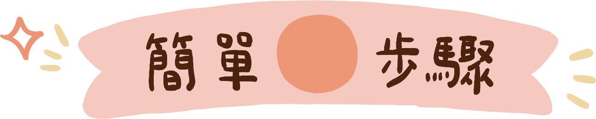

🏠
💗 雪莉與朵栗
👶 育兒小幫手
📅 前往團購行事曆
🌸 選擇食材，發現美味食譜 🌸
🥗
食材介紹
認識豐富的食材 💗
📖
觀看食譜
瀏覽美味的食譜 💗
即將推出
🍽️
每日餐盤
探索餐盤靈感 💗
🎒
開學清單
開學用品清單參考 💗
即將推出
📚
教材分享
豐富有趣的免費教材 💗
即將推出
🧸
玩具繪本
精選童書與玩具，陪孩子玩出想像力 💗
🌈
兒童專區
集點卡、闖關小遊戲通通有 💗
🌸 開始探索美味食譜吧！ 🌸
🔍
選擇喜愛食材
挑選食材，
為家人準備營養餐點
👩🍳
豐富食譜推薦
依食材推薦適合的
美味食譜
✨
輕鬆學習料理
簡單步驟，
新手也能輕鬆上手
資料載入中…
← 返回首頁
品牌
🌿 請先選擇一個品牌，看看有哪些食材唷！
🥬 生鮮食材
這個品牌目前還沒有生鮮食材
🍼 副食品
🫒 隱藏油品標籤
這個品牌目前還沒有副食品
← 返回首頁
品牌
適合月齡
選擇食材
清除所有篩選
🍽 食譜推薦（共 0 道）
這個篩選條件下沒有找到食譜
雪莉與朵栗 の食材小卡
✕
📝 食材介紹
🛒 前往購買
🍽 使用這個食材的食譜
✕

🛒 前往購買食材
🎬 觀看影片
✕
這個食材有多個品項，選一個看介紹